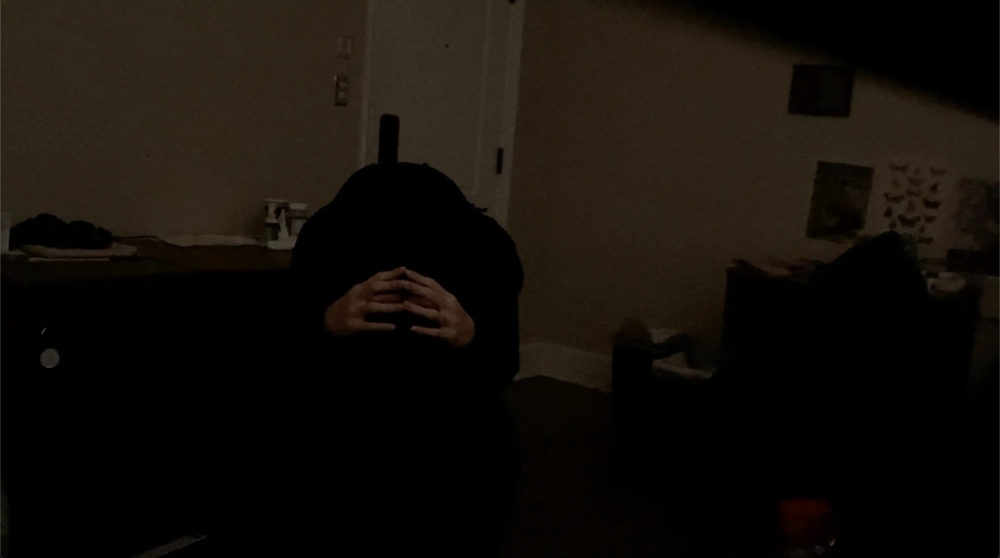
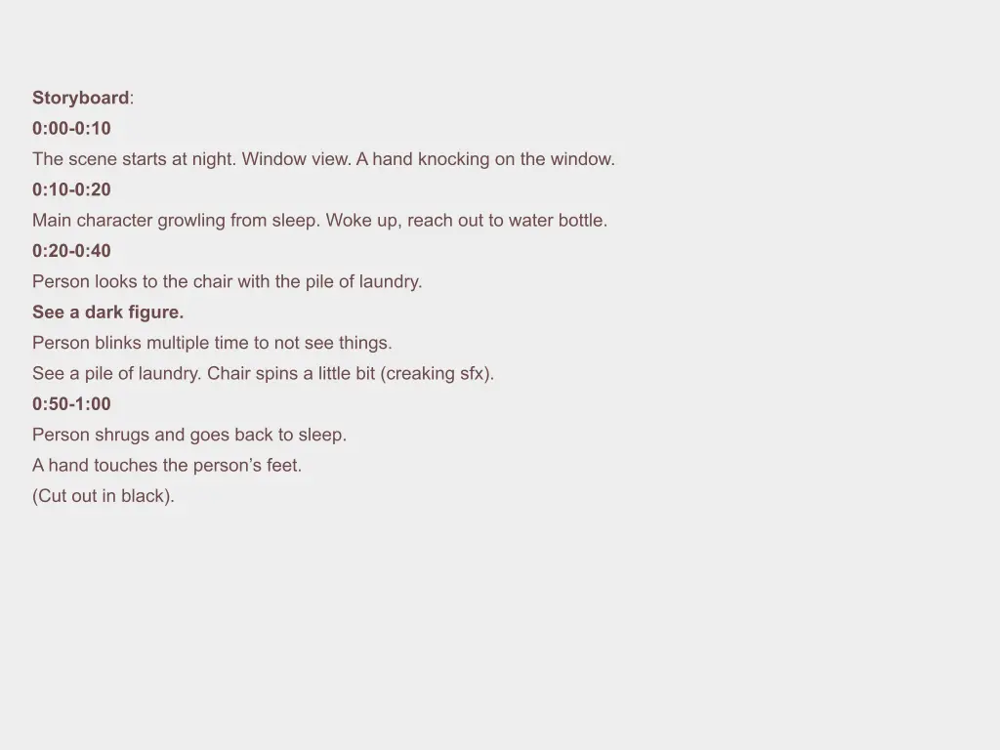

Project type:
Convey feelings through montage.
Project description:
This project showcases my ability to evoke emotion and communicate abstract concepts through visual storytelling. By leveraging the power of montage and carefully synchronizing visuals with audio and pacing, I created a compelling emotional experience. The assignment challenged me to explore the expressive potential of editing, using imagery and rhythm to convey deep emotional resonance through a single-word. It allowed me to refine my skills in editing for impact, audio timing, and narrative construction in a concise and powerful format.
Date:
February 10 - 23, 2025
Role:
Video Editor.
Project highlight:
Video:
Please choose 1080p for highest quality.
Story board:
